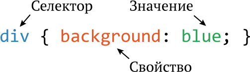

Стилевые правила записываются в собственном формате, отличном от HTML. Основным понятием выступает селектор — это шаблон, который используется для выбора одного или нескольких элементов HTML и применения к ним параметров форматирования. Общий способ записи имеет следующий вид.

Вначале указывается имя селектора, например, div, это означает, что все стилевые параметры будут применяться ко всем элементам <div> в HTML-документе. Затем пишутся фигурные скобки, внутри которых идёт стилевое свойство, а его значение указывается после двоеточия. Стилевые свойства разделяются между собой точкой с запятой, в конце этот символ можно опустить.
CSS не чувствителен к регистру, переносу строк, пробелам и символам табуляции, поэтому форма записи зависит от желания разработчика. Так, в примере 1 показаны две разновидности оформления селекторов и их правил.
Пример 1. Использование стилей
<!DOCTYPE html>
<html>
<head>
<meta charset="utf-8">
<title>Заголовки</title>
<style>
h1 {color:#a6780a;font-weight:normal;}
h2 {
color: olive;
border-bottom: 2px solid black;
}
</style>
</head>
<body>
<h1>Заголовок 1</h1>
<h2>Заголовок 2</h2>
</body>
</html>В данном примере свойства селектора h1 записаны в одну строку без пробелов, а для селектора h2 каждое свойство располагается на отдельной строке. Во втором случае проще отыскивать нужные свойства и править их по необходимости, но при этом незначительно возрастает объём данных за счёт активного использования пробелов и переносов строк. Обычно при разработке сайта используют наиболее удобную и наглядную форму записи, а уже перед публикацией сайта из стилевого файла для сокращения его объёма удаляются все пробелы и переносы строк.
Правила применения стилей
Далее приведены некоторые правила, которые необходимо знать при описании стиля.
Форма записи
Для селектора допускается добавлять каждое стилевое свойство и его значение по отдельности, как это показано в примере 2.
Пример 2. Расширенная форма записи
td { background: olive; }
td { color: white; }
td { border: 1px solid black; }Однако такая запись не очень удобна. Приходится повторять несколько раз один и тот же селектор, да и легко запутаться в их количестве. Поэтому практичнее писать все свойства для каждого селектора вместе. Указанный набор записей в таком случае получит следующий вид (пример 3).
Пример 3. Компактная форма записи
td {
background: olive; /* Оливковый цвет фона */
color: white; /* Белый цвет текста */
border: 1px solid black; /* Чёрная рамка */
}Эта форма записи более наглядная и удобная в использовании.
Имеет приоритет значение, указанное в коде ниже
Если для селектора вначале задаётся свойство с одним значением, а затем то же свойство, но уже с другим значением, то применяться будет то значение, которое в коде CSS установлено ниже (пример 4).
Пример 4. Разные значения у одного свойства
p { color: green; /* Зелёный цвет текста */ }
p { color: red; /* Красный цвет текста */ }В данном примере для селектора p цвет текста вначале установлен зелёным, а затем красным. Поскольку значение red расположено ниже, то оно в итоге и будет применяться к тексту.
На деле такой записи лучше вообще избегать и удалять повторяющиеся значения. Но подобное может произойти случайно, к примеру, в случае подключения разных стилевых файлов, в которых содержатся одинаковые селекторы.
Значения
У каждого свойства может быть только соответствующее его целям значение. Например, для color, который устанавливает цвет текста, в качестве значений недопустимо использовать числа.
Комментарии
Комментарии нужны, чтобы делать пояснения по поводу использования того или иного стилевого свойства, выделять разделы или писать свои заметки. Комментарии позволяют легко вспоминать логику и структуру селекторов, а также повышают разборчивость кода. Комментарии обычно применяют в отладочных или учебных целях, а при публикации сайта их стирают.
Чтобы пометить, что текст является комментарием, применяют следующую конструкцию /* ... */ (пример 5).
Пример 5. Комментарии в CSS-файле
/*
Стиль для сайта webref.ru
Сделан для ознакомительных целей
*/
div {
width: 200px; /* Ширина блока в пикселях */
background: #f0f0f0; /* Серый цвет фона */
border: 1px solid olive; /* Оливковая рамка */
}Как следует из данного примера, комментарии можно добавлять в любое место CSS-документа, а также писать текст комментария в несколько строк. Вложенные комментарии, когда один комментарий располагается внутри другого, недопустимы.